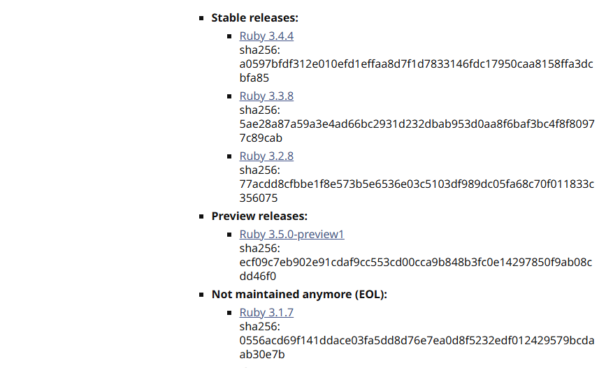
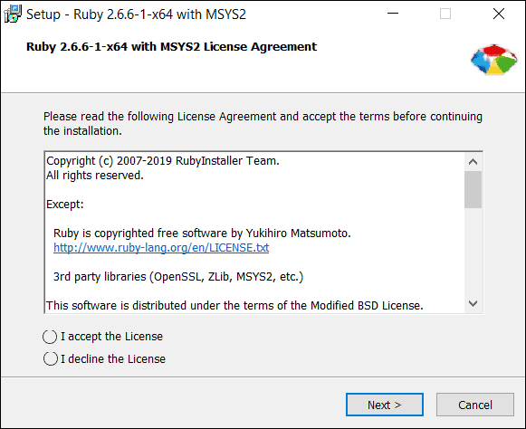

💎 Introduction to Ruby
Ruby is a dynamic, open-source programming language with a focus on simplicity and productivity. It has an elegant syntax that's natural to read and easy to write.
🔧 How to Install Ruby
- Go to ruby-lang.org/downloads
- Download the latest Ruby installer for your operating system.
- Run the installer and follow the on-screen instructions.
📸 Installation Screens



💡 Tip: After installing, open your terminal or command prompt and type ruby -v to check if Ruby is installed correctly.
✨ What You Can Do With Ruby
- Build simple scripts to automate tasks.
- Create web applications using frameworks like Ruby on Rails.
- Develop games, APIs, and command-line tools.
🚀 First Ruby Program
Create a new file named hello.rb and write this code:
puts "Hello, world!"
Then run it in your terminal:
ruby hello.rb